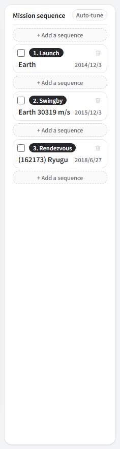
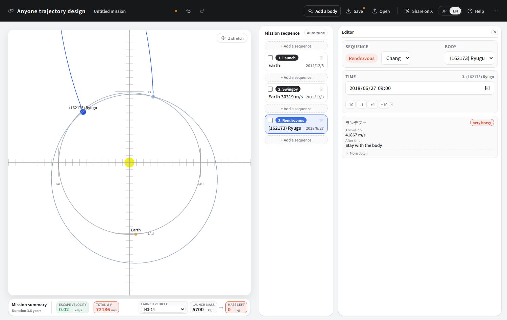
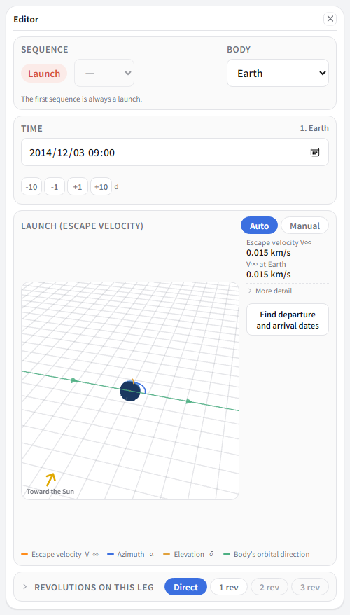
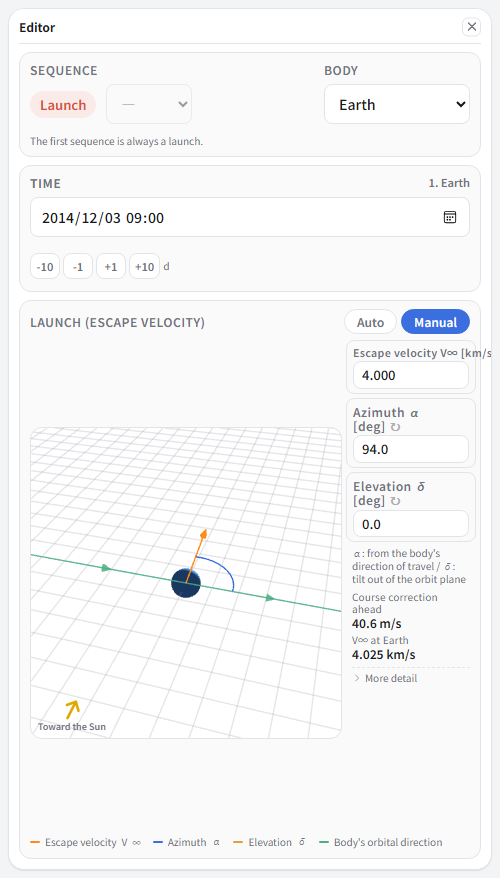
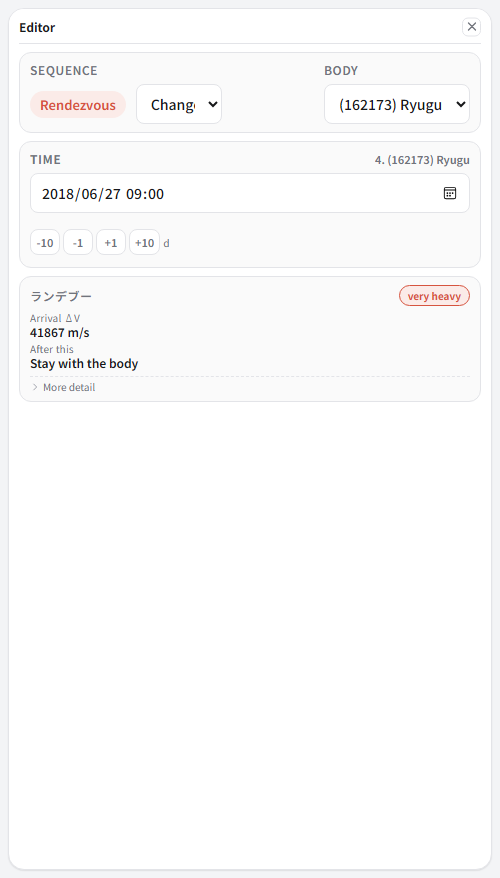
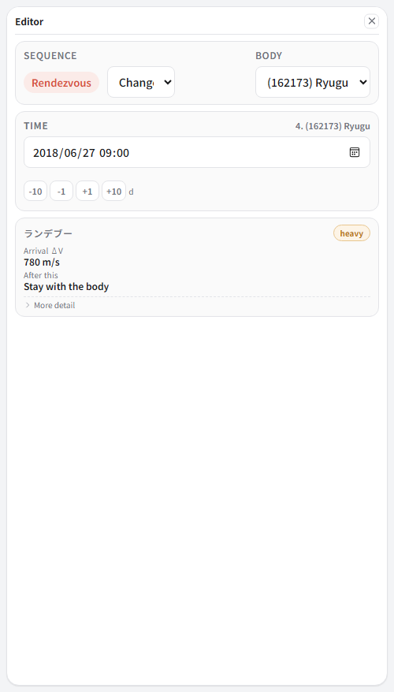
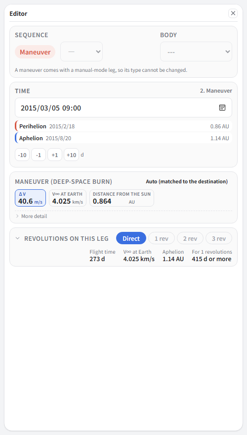
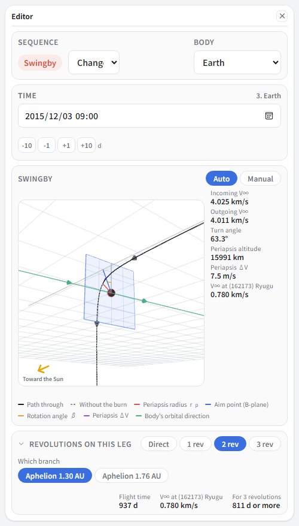
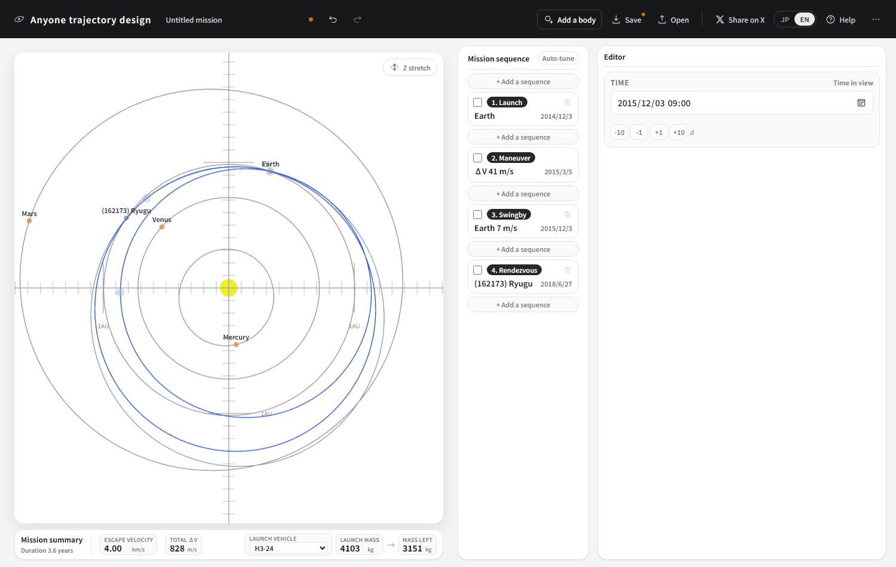

⑤ Rendezvous with an asteroid
To Ryugu, the asteroid Hayabusa2 went to. We reproduce it with the real launch, Earth-swingby and arrival dates. Rather than flying past, we match velocity and travel alongside, which works quite differently from going to a planet.
What you will learn here
- Adding a body that is not in the list
- An orbit that returns to Earth in one year (ΔVEGA / EDVEGA)
- Choosing how many times to circle the Sun before arriving (revolutions on a leg)
- The difference between a flyby and a rendezvous
Calling up Ryugu
Press “Add a body” in the top bar. You can search a catalogue of asteroids, comets and interstellar objects (data from the IAU Minor Planet Center).
Type Ryugu or 162173 into the search box, pick
(162173) Ryugu from the results, and press “Add”.
From then on Ryugu appears in the body lists.
Building it
-
Make three sequences. All of these are Hayabusa2's real dates.
No. Type Body Date 1 Launch Earth 2014/12/03 2 Swingby Earth 2015/12/03 3 Rendezvous (162173) Ryugu 2018/06/27 
For a small body the types on offer are Flyby and Rendezvous. Swingby and orbit insertion do not appear: the gravity is far too small either to bend a path or to capture you.

The arrangement returns to Earth exactly one year after launch. Juno in tutorial ④ took two years; Hayabusa2 came back in one.
What returning in a year means

The same wall as in tutorial ④. Departure and arrival are the same place, so auto mode answers “do not move from the spot”.
We use the same trick. Set the launch sequence to Manual, which attaches a burn sequence behind it, and set that burn's date three months later (2015/03/05).
-
Go back to the launch sequence and enter escape velocity 4.0 km/s, azimuth α = 94 degrees, elevation δ = 0.

α 94 degrees: leaving almost sideways to Earth's direction of travel.
Going direct does not reach
That gets us as far as the Earth swingby. What about Ryugu beyond it? Select the third sequence (the rendezvous).

41867 m/s. The total ΔV passes 84 km/s and the mass left is zero. Utterly hopeless.
The reason is the 937 days — two years and seven months between leaving Earth and reaching Ryugu. A leg defaults to “head straight there without circling the Sun”, and a trajectory that takes two years and seven months to go straight there has to be an absurd one, shooting far out of the solar system and coming back.
Circling the Sun twice before arriving
The real Hayabusa2 went twice round the Sun during those two years and seven months. Open “Revolutions on this leg” at the bottom of the editor and choose 2 rev.

41867 → 780 m/s, without moving a single date. All that changed is how many times you go round the Sun on the way.
Reading the burn and the swingby

The burn sequence reads 41 m/s. It is only fine-tuning how fast you come back to Earth. Making the return speed with a burn is exactly what ΔVEGA is, and Hayabusa2 did it with ion engines (EDVEGA).

It passes Earth at an altitude of 16000 km, is bent through 63 degrees, and heads for Ryugu's orbit. The periapsis ΔV is 7.5 m/s — almost entirely gravity.
Rendezvous and flyby
Last comes the rendezvous. The arrival ΔV of 780 m/s is the burn needed to match Ryugu's velocity and travel alongside it. Try changing it to a Flyby. The ΔV drops to zero. If you are only passing, you need do nothing.
With small bodies this is what tells. Where a planet's gravity would help you — would capture you — an asteroid makes you pay for all of it out of your own fuel. Ryugu's gravity is so weak that the very idea of an orbit barely holds. That is why Hayabusa2 spoke of “holding a home position” rather than orbiting.
The finished article

| Item | This design | The real Hayabusa2 |
|---|---|---|
| Launch | 2014/12/03 | 2014/12/03 |
| Launch energy C3 | 16.0 km²/s² | 22.4 km²/s² |
| Earth swingby | 2015/12/03 | 2015/12/03 |
| Swingby altitude | about 16000 km | 3090 km |
| Arrival at Ryugu | 2018/06/27 | 2018/06/27 |
| Deep-space burn | 41 m/s (once) | continuous, on ion engines |
| Total ΔV | 828 m/s | — |
What comes next
From here Hayabusa2 carried its samples home to Earth. Try adding the return you built in tutorial ①. Put a Departure after the Ryugu sequence, and an Atmospheric entry at Earth to finish. The real capsule came down in Australia on 5 December 2020, at 11.6 km/s.